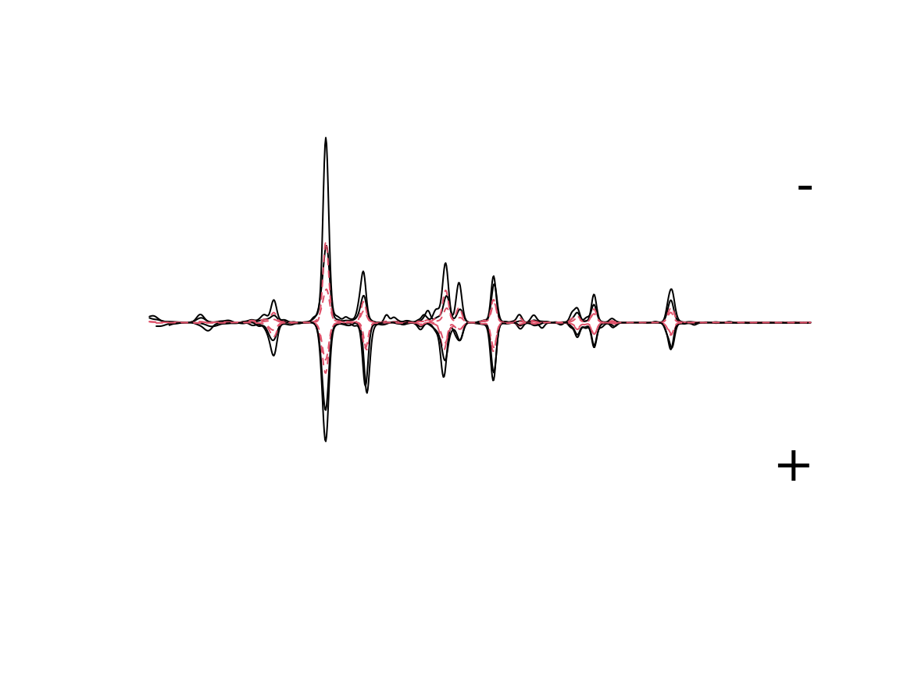
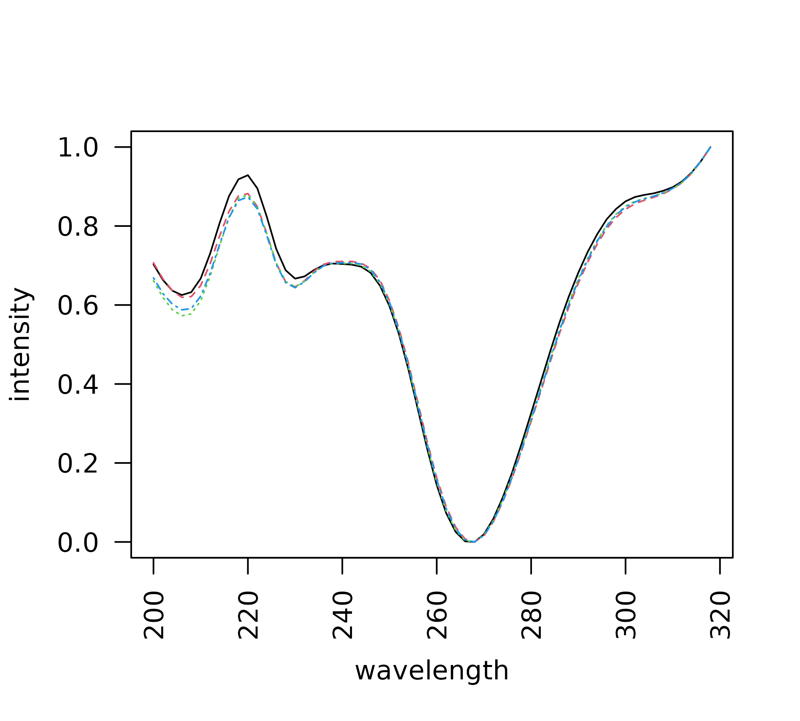

Introduction
chromatographR is a package for the reproducible analysis of HPLC-DAD data in R. Liquid chromatography coupled to diode-array detection (HPLC-DAD) remains one of the most popular analytical methodologies due to its convenience and low-cost. However, there are currently very few open-source tools available for analyzing HPLC-DAD chromatograms or other “simple” chromatographic data. The use of proprietary software for the analysis of HPLC-DAD data is currently a significant barrier to reproducible science, since these tools are not widely accessible, and usually require users to select complicated options through a graphical user interface which cannot easily be repeated. Reproducibility is much higher in command line workflows, like chromatographR, where the entire analysis can be stored and easily repeated by anyone using publicly available software.
The chromatographR package draws inspiration from the previously published alsace package (Wehrens, Carvalho, and Fraser 2015), but with improved functions for peak-finding, integration and peak table generation as well as a number of new tools for data visualization and downstream analysis. Unlike alsace, which emphasized multivariate curve resolution through alternating least squares (MCR-ALS), chromatographR is developed around a more conventional workflow that should seem more familiar to users of standard software tools for HPLC-DAD analysis. chromatographR includes tools for a) pre-processing, b) retention-time alignment, c) peak-finding, d) peak-integration and e) peak-table construction, as well as additional functions useful in analysis of the resulting peak table.
Workflow
Loading data
chromatographR now includes an option to directly read data from Agilent ChemStation or MassHunter files (Bovee 2022a, 2022b), Chromeleon UV ASCII files, Thermo Raw, Waters ARW and others using the read_chroms function. Select the appropriate file format by setting the format_in argument to csv, chemstation_uv, masshunter_dad, chromeleon_uv, waters_arw, etc.
> # single folder
> read_chroms(paths = path, format_in = "csv")
>
> # multiple folders
> path = 'foo' # path to parent directory
> folders <- list.files(path = path, pattern = "EXPORT3D")
> dat <- read_chroms(folders, format_in = "csv")Example data
We have included some example data consisting of root extracts from tall goldenrod (Solidago altissima). Roots were extracted in 90% methanol and run on an Agilent 1100 HPLC coupled to a DAD detector, according to a previously described method (Uesugi and Kessler 2013). The dataset is called Sa (abbreviated from Solidago altissima).
> data(Sa)Pre-processing data
Data from liquid chromatography often suffer from a variety of non-informative artifacts, such as noise or a drifting baseline. In addition, the data produced by the instrument may have a higher resolution or wider range (along either the time or spectral dimensions) than we require. Fortunately, most of these issues can be remedied fairly easily. For example, smoothing can reduce noise in the spectral direction while baseline subtraction can help correct a drifting baseline. Interpolation of wavelengths and retention times can be used to reduce the dimensionality of the data, facilitating comparison across samples and reducing the time and computational load required by downstream analyses. All of these functions (smoothing, baseline correction, and interpolation) are available through the preprocess function and are enabled by default.
To select a narrower range of times and/or wavelengths, arguments can be provided to dim1 and dim2 arguments. The baseline_cor function from the ptw package (Bloemberg et al. 2010) takes arguments p (an asymmetry parameter) and lambda (a smoothing parameter). You can read more about these in the documentation for ptw::asysm. You may want to experiment with these parameters before choosing values to use on your whole dataset.
> i=2 # chromatogram number in list of data
> tpoints <- as.numeric(rownames(Sa[[i]]))
> lambda='200.00000'
>
> matplot(x=tpoints, y=Sa[[i]][,lambda],
+ type='l', ylab='Abs (mAU)', xlab='Time (min)')
> matplot(x=tpoints, y = ptw::baseline.corr(Sa[[i]][,lambda],p=.001,lambda=1e5),
+ type='l', add = T, col='blue', lty = 3)
> # choose dimensions for interpolation
> new.ts <- seq(10,18.66,by=.01) # choose time-points
> new.lambdas <- seq(200, 318, by = 2) # choose wavelengths
>
> dat.pr <- preprocess(Sa, dim1=new.ts, dim2=new.lambdas,
+ parallel=F, p=.001, lambda=1e5)Alignment
In many cases, liquid chromatography can suffer from retention time shifts (e.g. due to temperature fluctuations, column degradation, or subtle changes in mobile-phase composition), which can make it very difficult to compare peaks across samples. Luckily, a number of “time-warping” algorithms have been developed for correcting these kinds of shifts. In chromatographR, parametric time warping (ptw) (Eilers 2004; Bloemberg et al. 2010) and variable penalty dynamic time warping (vpdtw) (Clifford et al. 2009; Clifford and Stone 2012) are available for correcting retention time shifts through the correct_rt function. Both warping functions aim to produce a better alignment of retention times by “warping” the time-axis of each supplied chromatogram to match a reference chromatogram. (The reference chromatogram can either be determined algorithmically or selected manually by setting the reference argument).
Parametric time warping
The ptw option can take a single wavelength or a list of wavelengths provided by the user using the lambdas argument. For each chromatogram, ptw then produces a “global” warping function across all the wavelengths supplied by the user. The code block below creates warping models for the samples in the provided list of data matrices. The same function is then used to warp each chromatogram according to the corresponding model, by setting the models parameter. Depending on the variety of your samples and the severity of the retention time shifts, it may take some experimentation with the warping parameters to get satisfactory results. Sometimes “less” can actually be “more” here – for example, wavelengths with fewer peaks may sometimes yield better warping models. (Also see the documentation for ptw for more guidance on warp function optimization).
> warping.models <- correct_rt(dat.pr, what = "models", lambdas=c("210"), scale=TRUE)
> warp <- correct_rt(chrom_list=dat.pr, models=warping.models, what="corrected.values")We can then use the following code snippet to compare the alignment of warped (top panel) and unwarped (bottom panel) chromatograms.
> par(mfrow=c(2,1))
> lambdas=c('210','260')
> plot.new()
> ts <- as.numeric(rownames(warp[[i]]))
> plot.window(xlim=c(head(ts,1), tail(ts,1)),ylim=c(0,1000))
> for (i in 1:length(warp)){
+ matplot(ts, warp[[i]][,lambdas],type='l',add=T)
+ }
> legend("topright", legend="ptw", bty = "n")
>
> plot.new()
> ts <- as.numeric(rownames(dat.pr[[i]]))
> plot.window(xlim=c(head(ts,1),tail(ts,1)),ylim=c(0,1000))
> for (i in 1:length(dat.pr)){
+ matplot(ts, dat.pr[[i]][,lambdas],type='l',add=T)
+ }
> legend("topright", legend="raw", bty = "n")
Clearly, the alignment is considerably improved after warping. You can also use the correct_rt function to do a global alignment on multiple wavelengths, by providing a list of wavelengths to the lambdas argument, but this will not always improve the results. While the alignment still isn’t perfect after warping, it is probably good enough to align our peaks and assemble them in the peak table, which is our primary goal.
Variable penalty dynamic time warping
Variable penalty dynamic time warping is another algorithm that can be very effective for correcting retention time shifts (Clifford et al. 2009; Clifford and Stone 2012). Instead of calculating an explicit warping function, dynamic time warping (DTW) works by repeatedly shifting, expanding or contracting the time axis in small steps until a satisfactory alignment is attained. This process can result in very close matching of peaks, but can also lead to severe peak distortion if the time axis is repeatedly expanded and/or contracted (Tomasi, van den Berg, and Andersson 2004). Variable penalty dynamic time warping is a derivative of DTW that constrains expansion and contraction of the time-axis by applying a penalty to these types of “risky” moves. This can often achieve a very good alignment with minimal peak distortion. VPdtw package is a suggested dependency since it requires a working C++ compiler. Unlike ptw, VPdtw can only take a single wavelength as input (but it returns a global warping on the whole chromatographic matrix). The code snippet below is not run, but shows how one could install VPdtw and use it to warp the example chromatograms.
> install.packages("VPdtw")
> warp <- correct_rt(chrom_list=dat.pr, alg="vpdtw", lambda="210", what="corrected.values")Peak finding and fitting
The get_peaks function produced a nested list of peaks by looping through the supplied chromatograms at the specified wavelengths, finding peaks, and fitting them to the specified function using non-linear least squares. The current peak-shape options are gaussian and egh (exponential-gaussian hybrid) (Lan and Jorgenson 2001). The area under the curve for each peak is then estimated using trapezoidal approximation. The function returns a nested list of data.frames containing parameters for the peaks identified in each chromatogram.
Filtering
The peak-finding algorithm may often detect a lot of peaks that are little more than noise. Thus, it is recommended to filter out extraneous peaks at this stage (especially if you are processing a lot of samples) as it can greatly reduce the computational load of peak table construction. This can be accomplished directly by using the arguments sd_max (to filter by peak width) and/or amp_thresh (to filter by peak height). Alternatively, the filter_peaks function can be used to filter peaks after the peak_list has already been created.
> pks_gauss <- get_peaks(warp, lambdas = c('210','260'), sd.max=40, fit="gaussian")
> pks_egh <- get_peaks(warp, lambdas = c('210', '260'), sd.max=40, fit="egh")Visualization
The plot.peak_list function allows you to visually assess the peak integration accuracy. Below we compare the peaks fitted for the first chromatogram (index = 1) using the two algorithms. Usually the egh function performs slightly better for asymmetrical peaks.
> par(mfrow=c(2,1))
> plot(pks_gauss, index=1, lambda='210')
> plot(pks_egh, index=1, lambda='210')
Peak table assembly
After obtaining a peak_list, the get_peaks function performs complete-linkage hierarchical clustering to link peaks across samples. It returns a peak_table object with samples as rows and peaks as columns. The peak_table object also has slots for holding various metadata about peaks, samples, and analyses. If you have a lot of samples, this step can be quite computationally expensive. Thus, it is suggested to filter the peak_list provided to get_peaktable in order to remove extraneous peaks (see Peak finding and fitting section above).
> pk_tab <- get_peaktable(pks_egh, response = "area")
> head(pk_tab$tab[,1:6]) V1 V2 V3 V4 V5 V6
119 5.475999 0.0000000 0.6473611 1.889210 15.144775 0.3108266
121 4.262768 1.0941736 0.6130032 0.000000 8.006312 0.0000000
122 8.395934 0.9467302 1.9957845 0.000000 25.950200 1.7959510
458 6.201729 2.2873095 1.9889770 5.308515 13.995000 0.2875473Further analysis and data-visualization
Attaching metadata
To begin analyzing your peak table, you will usually want to attach sample meta-data to the peak_table object. This can be easily accomplished using the attach_metadata function. The peak table can then be normalized (e.g. by dividing out the sample weight) using the normalize_data function.
> path <- system.file("extdata", "Sa_metadata.csv", package = "chromatographR")
> meta <- read.csv(path)
> pk_tab <- attach_metadata(peak_table = pk_tab, metadata = meta, column="vial")
> pk_tab <- normalize_data(peak_table = pk_tab, column="mass")Data exploration
Mirror plot
The mirror_plot function provides a quick way to visually compare results across treatment groups.
> mirror_plot(pk_tab, lambdas = c("210","260"), var = "trt", legend_size=2)
Plotting spectra
The plot_spectrum function allows you to easily plot or record the spectra associated with a particular peak in your peak table. This is useful for interpreting your results and/or checking for errors in your peak table. For example, you may want to check if the spectra for a particular peak match across different samples, or you may want to compare your spectrum with a known standard. The plot_spectrum function can be used to plot only the spectrum or only the chromatographic trace using the arguments plot_spectrum and plot_trace. By default it will plot the trace and spectrum from the chromatogram with the largest peak in the peak table. Alternatively, you can choose the chromatogram index and wavelength using the chr and lambda arguments.
> oldpar <- par(no.readonly = TRUE)
> par(mfrow=c(2,1))
> peak="V7"
> plot_spectrum(peak, peak_table = pk_tab, chrom_list=warp, verbose=F)
> par(oldpar)The plot_all_spectra function can be used to visually compare the spectra for a specified peak across all samples.
> peak="V13"
> plot_all_spectra(peak, peak_table=pk_tab, export=F, overlapping=T)
Plot peak table function
The plot.peak_table function provides a simplified interface to various options for plotting data from the peak_table. For example, it can be used as a quick interface to the plot_spectrum and plot_all_spectra functions shown above. It can also be used to quickly compare results across treatments by calling boxplot.
> plot(pk_tab, loc = "V13", box_plot = TRUE, vars = "trt", verbose = FALSE)

References
Bloemberg, Tom G., Jan Gerretzen, Hans J. P. Wouters, Jolein Gloerich, Maurice van Dael, Hans J. C. T. Wessels, Lambert P. van den Heuvel, Paul H. C. Eilers, Lutgarde M. C. Buydens, and Ron Wehrens. 2010. “Improved Parametric Time Warping for Proteomics.” Chemometrics and Intelligent Laboratory Systems, OMICS, 104 (1): 65–74. https://doi.org/10.1016/j.chemolab.2010.04.008.
Bovee, Roderick. 2022a. “Aston.”
———. 2022b. “Entab.”
Clifford, David, and Glenn Stone. 2012. “Variable Penalty Dynamic Time Warping Code for Aligning Mass Spectrometry Chromatograms in R.” Journal of Statistical Software 47 (April): 1–17. https://doi.org/10.18637/jss.v047.i08.
Clifford, David, Glenn Stone, Ivan Montoliu, Serge Rezzi, François-Pierre Martin, Philippe Guy, Stephen Bruce, and Sunil Kochhar. 2009. “Alignment Using Variable Penalty Dynamic Time Warping.” Analytical Chemistry 81 (3): 1000–1007. https://doi.org/10.1021/ac802041e.
Eilers, Paul H. C. 2004. “Parametric Time Warping.” Analytical Chemistry 76 (2): 404–11. https://doi.org/10.1021/ac034800e.
Lan, Kevin, and James W. Jorgenson. 2001. “A Hybrid of Exponential and Gaussian Functions as a Simple Model of Asymmetric Chromatographic Peaks.” Journal of Chromatography A 915 (1): 1–13. https://doi.org/10.1016/S0021-9673(01)00594-5.
Tomasi, Giorgio, Frans van den Berg, and Claus Andersson. 2004. “Correlation Optimized Warping and Dynamic Time Warping as Preprocessing Methods for Chromatographic Data.” Journal of Chemometrics 18 (5): 231–41. https://doi.org/10.1002/cem.859.
Uesugi, Akane, and André Kessler. 2013. “Herbivore Exclusion Drives the Evolution of Plant Competitiveness via Increased Allelopathy.” New Phytologist 198 (3): 916–24. https://doi.org/10.1111/nph.12172.
Wehrens, Ron, Elisabete Carvalho, and Paul D. Fraser. 2015. “Metabolite Profiling in LCDAD Using Multivariate Curve Resolution: The Alsace Package for R.” Metabolomics 11 (1): 143–54. https://doi.org/10.1007/s11306-014-0683-5.
Session Information
> sessionInfo()R version 4.2.1 (2022-06-23)
Platform: x86_64-pc-linux-gnu (64-bit)
Running under: Ubuntu 20.04.4 LTS
Matrix products: default
BLAS: /usr/lib/x86_64-linux-gnu/blas/libblas.so.3.9.0
LAPACK: /usr/lib/x86_64-linux-gnu/lapack/liblapack.so.3.9.0
locale:
[1] LC_CTYPE=C.UTF-8 LC_NUMERIC=C LC_TIME=C.UTF-8
[4] LC_COLLATE=C.UTF-8 LC_MONETARY=C.UTF-8 LC_MESSAGES=C.UTF-8
[7] LC_PAPER=C.UTF-8 LC_NAME=C LC_ADDRESS=C
[10] LC_TELEPHONE=C LC_MEASUREMENT=C.UTF-8 LC_IDENTIFICATION=C
attached base packages:
[1] parallel stats graphics grDevices utils datasets methods
[8] base
other attached packages:
[1] chromatographR_0.4.4 knitr_1.40
loaded via a namespace (and not attached):
[1] Rcpp_1.0.9 lattice_0.20-45 RcppDE_0.1.6
[4] tidyr_1.2.0 png_0.1-7 zoo_1.8-10
[7] rprojroot_2.0.3 digest_0.6.29 utf8_1.2.2
[10] R6_2.5.1 cellranger_1.1.0 VPdtw_2.1-14
[13] dynamicTreeCut_1.63-1 evaluate_0.16 highr_0.9
[16] pillar_1.8.1 rlang_1.0.5 curl_4.3.2
[19] readxl_1.4.1 TTR_0.24.3 jquerylib_0.1.4
[22] Matrix_1.4-1 reticulate_1.25 rmarkdown_2.16
[25] pkgdown_2.0.6 textshaping_0.3.6 desc_1.4.1
[28] stringr_1.4.1 munsell_0.5.0 compiler_4.2.1
[31] xfun_0.32 pkgconfig_2.0.3 systemfonts_1.0.4
[34] htmltools_0.5.3 tidyselect_1.1.2 tibble_3.1.8
[37] fansi_1.0.3 dplyr_1.0.9 grid_4.2.1
[40] jsonlite_1.8.0 lifecycle_1.0.1 magrittr_2.0.3
[43] scales_1.2.1 cli_3.3.0 stringi_1.7.8
[46] cachem_1.0.6 farver_2.1.1 ptw_1.9-16
[49] fs_1.5.2 xml2_1.3.3 smoother_1.1
[52] bslib_0.4.0 fastcluster_1.2.3 xts_0.12.1
[55] ragg_1.2.2 generics_0.1.3 vctrs_0.4.1
[58] tools_4.2.1 pvclust_2.2-0 glue_1.6.2
[61] purrr_0.3.4 fastmap_1.1.0 yaml_2.3.5
[64] colorspace_2.0-3 memoise_2.0.1 minpack.lm_1.2-2
[67] chromConverter_0.2.1 sass_0.4.2